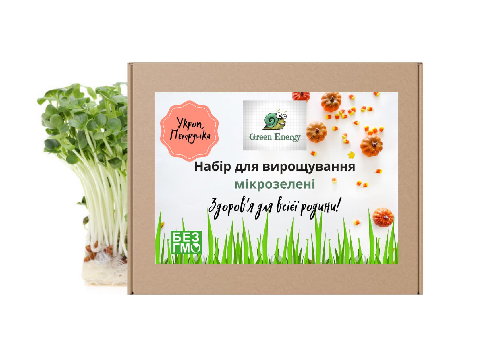

Цікаво дізнатися
Мікрогрін або мікрозелень досить новий вид зелені на ринку України. Мікрогрін являє собою початкові паростки улюблених видів смачної та звичної зелені, які можна виростити в домашніх умовах протягом 7-10 днів. Вже за тиждень ви матимете смачне доповнення для своїх улюблених страв не доклавши значних зусиль. Нині в Україні є велика кількість різновидів мікрогріну. Вирощувати мікрогрін можливо використавши насіння різних рослин таких як : базилік, цибуля, горох, гірчиця, рукола та інші.
Наші набори:
-
(Базилік, рукола, крес-салат, броколі, кінза,
люцерна, кріп, петрушка)Ціна: 399 грн
-
(Базилік, рукола)
Ціна: 199 грн
-
(Крес-салат, кінза)
Ціна: 199 грн
-

(Люцерна, броколі)
Ціна: 199 грн
-

(Кріп, петрушка)
Ціна: 199 грн
Інструкція з вирощування:
Крок 1: Вибір насіння
Для вирощування мікрозелені потрібно вибрати насіння відповідної культури. Найчастіше використовуються насіння броколі, редиски, гороху, базиліка, кропу, гірчиці, шпинату та інших овочевих та зелених культур.
Крок 2: Приготування підстилки
Для вирощування мікрозелені можна використовувати різноманітні підстилки, наприклад, грунт, кокосові волокна, пергаментні рулони, картон тощо. Підстилку необхідно забезпечити вологою, а також зробити на ній отвори для дренажу.
Крок 3: Посів насіння
На підготовлену підстилку потрібно рівномірно розподілити насіння, не пересіваючи їх занадто густо. Після посіву насіння необхідно обережно присипати тонким шаром підстилки.
Крок 4: Зрошення та вологозабезпечення
Після посіву насіння необхідно зробити забезпечення вологою, наприклад, зрошуванням з пульверизатора або заливанням знизу. Підстилку необхідно вологим тримати до моменту, коли мікрозелень буде готова до збору.
Крок 5: Освітлення та температура
Для розвитку мікрозелені потрібне достатнє освітлення. Якщо рослини знаходяться у приміщенні з недостатнім освітленням, можна використовувати додаткове освітлення, наприклад, LED-лампи. Температура для вирощування мікрозелені повинна бути комфортною для людини, тобто близько 20-22 градусів Цельсія.
Крок 6: Збір мікрозелені.
Склад пакунку:
Вирощування мікрогріну:
Ваші відгуки:
-

Надія
- "Постійно купую на цьому сайті.Ввічливі консултльтанти.Рекомендую всім!"
-
Олександра
- "А знаєте, то зовсім не складна справа вирощувати мікрогрін вдома.Завдяки набору, в якому є все необхідне, це елементарно)))"
-
Іван
- "Все круто!Вже давно вживаю мікрозелень та всім раджу."
-
Оксана
- "Діти просто в захваті, і я також)Дякую сайту Green Energy!"